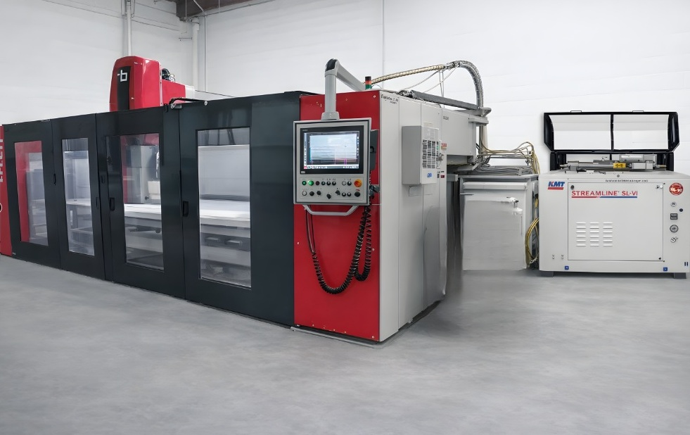
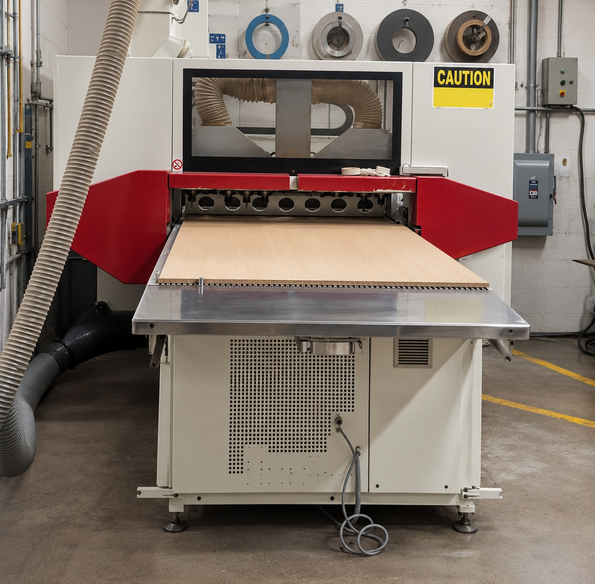
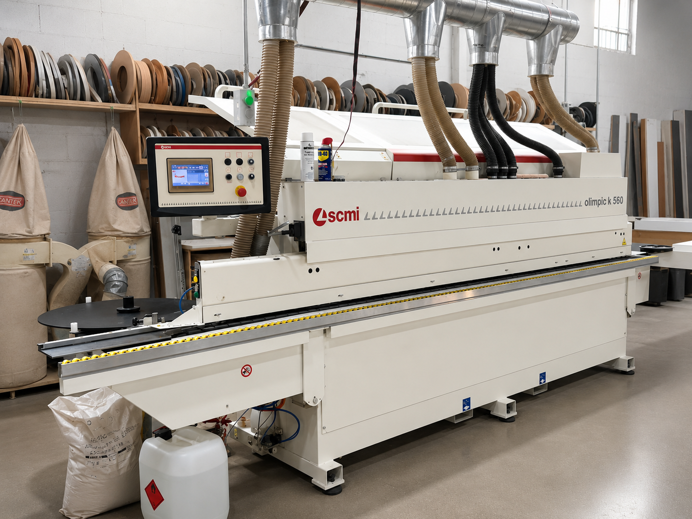

From a small family workshop in Hialeah to a manufacturing operation that integrates custom cabinetry and stonework into a single production process—guided by precision and excellence, and driven by European technology— Artemisa Marble & Cabinet has redefined custom luxury production in South Florida.

Founded in 1975 in Hialeah, Artemisa began as a small family workshop dedicated to cultured marble craftsmanship and precision detail.
Under the leadership of Damian Molina—who serves as president and possesses decades of personal experience in the sector—the company took its most significant step by breaking down the barrier between carpentry and stonework, trades that were historically distinct, by unifying them into a synchronized production process, Artemisa evolved from a reliance on manual cutting tools and artisanal techniques to become one of the most respected custom manufacturing operations in South Florida, utilizing state-of-the-art technology.
Family workshop founded in Hialeah focused on cultured marble vanity tops.
Expansion into natural stone fabrication and custom cabinetry production.
Digital transformation with CAD systems and CNC automation.
Integrated luxury manufacturing powered by Breton & SCM technologies.

Precision stone fabrication capable of processing Dekton, quartz, natural stone, and ultra-compact surfaces with millimeter-level accuracy.

Automated nesting CNC technology for high-precision cabinet manufacturing with optimized material efficiency and perfect assembly alignment.

Zero-joint edgebanding technology delivering seamless luxury finishes with superior moisture resistance and durability.
Years of Experience
Custom Production
Digital Manufacturing
Integrated Workflow
Today, Artemisa Marble & Cabinet represents the fusion of generational craftsmanship and advanced industrial automation. Through continuous improvement, SOP standardization, digital workflows, and Kaizen philosophy, the company continues building the foundation for the next era of precision manufacturing and luxury design in South Florida.